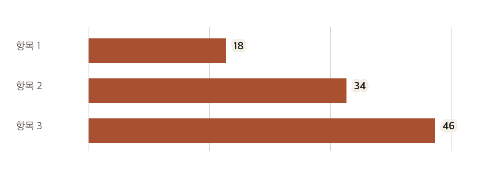
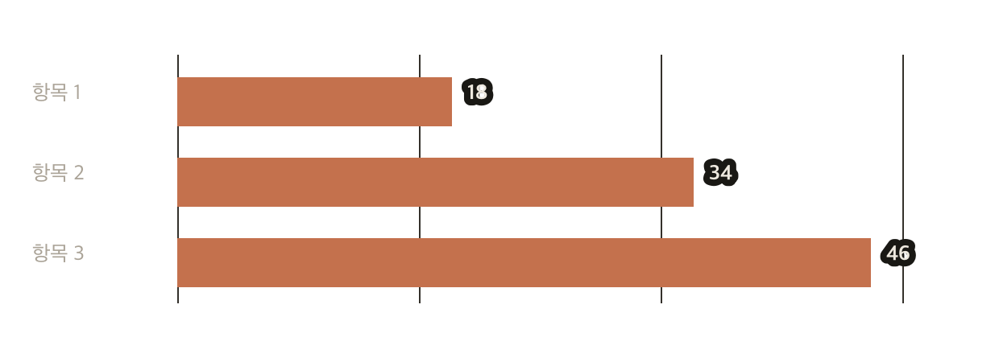

자료를 빠르게 읽는 보고서
요약
전체
48
변경
12
유지
36
본문
중요한 내용을 먼저 적고, 필요한 자료를 바로 뒤에 둔다. 설명은 자료가 무엇을 뜻하는지 이해하는 데 필요한 만큼만 쓴다.
요약과 세부 내용을 분리하면 처음 읽는 사람도 필요한 부분부터 볼 수 있다.
보조 설명은 본문보다 작은 글자와 약한 선으로 표시한다.


표
| 항목 | 설명 | 값 |
|---|---|---|
| 항목 1 | 기본 상태 | 18 |
| 항목 2 | 변경된 상태 | 34 |
| 항목 3 | 현재 상태 | 46 |